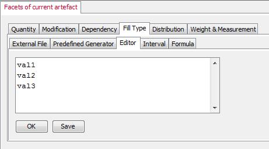

de.uni.bamberg.wiai.minf.forflow.datagenerator.controller.datageneration.filltype.Editor
de.uni.bamberg.wiai.minf.forflow.datagenerator.controller.datageneration.filltype.Editor
|
||||||||||
| PREV CLASS NEXT CLASS | FRAMES NO FRAMES | |||||||||
| SUMMARY: NESTED | FIELD | CONSTR | METHOD | DETAIL: FIELD | CONSTR | METHOD | |||||||||
java.lang.Object
public class Editor
The editor filling type is a fast and handy option when no flat file exits, no interval can be defined and no pre-defined generator fits. The editor offers the option to create a list of values in the system itself, rather to switch the application an create one. It's more of convenience. It's also possible to save the entered text and link it with the external file option.
Example Here is an example how to enter the values for an attribute (facet). Each line holds one value, it doesn't matter how long the line is or how it is written.  Notice, the class implementsFillBehaviour interface.
It makes this kind of strategy observable.
Observable
Observable means in this context, whenever an observer
registers to or un-registers from this class, the subject
itself notifies the UI to register this class in a specific
list of generators.
| Constructor Summary | |
|---|---|
Editor()
sole default constructor |
|
| Method Summary | |
|---|---|
int |
calculateN(java.net.URI file)
this method is not used here and therefore throws an UnsupportedOperationException. |
int |
getLowerBound()
gets the lower bound |
int |
getN()
each filling behaviour whether it is via a value file, an interval or by editor each of them has a range of values. |
java.lang.String |
getName()
gets the name of this filling. |
int |
getUpperBound()
gets the upper endpoint |
java.lang.String |
getValueAt(int n)
this method has the job of retrieving the value at the specified index. |
java.util.List<java.lang.String> |
getValues()
gets the list of values at once. |
boolean |
isValueIncremented()
sometimes it is useful to increment one value rather than typing in a whole bunch of different ones. |
void |
isValueIncremented(boolean increment)
sometimes it is useful to increment one value rather than typing in a whole bunch of different ones. |
java.util.Iterator<java.lang.String> |
iterator()
Returns an iterator over the elements in this list in proper sequence. |
void |
notifyOberverFillBehaviour()
Here's the fun part; this is where we tell all observers about the state. |
void |
registerObserverFillBehaviour(ObserverFillBehaviour observer)
When an observer registers, it's just added to the end of an observer list. |
void |
removeObserverFillBehaviour(ObserverFillBehaviour observer)
Likewise, when an observer wants to un-register we just take it off the list. |
void |
setValues(java.util.List<java.lang.String> values)
sets the values which has been typed in by the editor. |
| Methods inherited from class java.lang.Object |
|---|
clone, equals, finalize, getClass, hashCode, notify, notifyAll, toString, wait, wait, wait |
| Constructor Detail |
|---|
public Editor()
| Method Detail |
|---|
public void setValues(java.util.List<java.lang.String> values)
values - the list of possible valuespublic void isValueIncremented(boolean increment)
increment - enable function incrementing values?public final boolean isValueIncremented()
public final java.lang.String getValueAt(int n)
FillBehaviour
getValueAt in interface FillBehaviourn - the index specifies the value at position n to retrieve.
public final java.util.List<java.lang.String> getValues()
public final int calculateN(java.net.URI file)
UnsupportedOperationException.
There exits an alternative method doing the job for editors.
calculateN in interface FillBehaviourfile - the path to the file to calc the values
calculateN()public final int getN()
FillBehaviour
f(x)
|
|
|------------ (1/N)
|
|
|___________|______
N values
getN in interface FillBehaviourpublic final int getLowerBound()
public final int getUpperBound()
public java.util.Iterator<java.lang.String> iterator()
public final java.lang.String getName()
FillBehaviour
getName in interface FillBehaviourpublic void registerObserverFillBehaviour(ObserverFillBehaviour observer)
ObservableFillBehaviour
registerObserverFillBehaviour in interface ObservableFillBehaviourobserver - an object to notify about changespublic void removeObserverFillBehaviour(ObserverFillBehaviour observer)
ObservableFillBehaviour
removeObserverFillBehaviour in interface ObservableFillBehaviourobserver - an object which doesn't want any notifications anymore.public void notifyOberverFillBehaviour()
ObservableFillBehaviour
notifyOberverFillBehaviour in interface ObservableFillBehaviour
|
||||||||||
| PREV CLASS NEXT CLASS | FRAMES NO FRAMES | |||||||||
| SUMMARY: NESTED | FIELD | CONSTR | METHOD | DETAIL: FIELD | CONSTR | METHOD | |||||||||